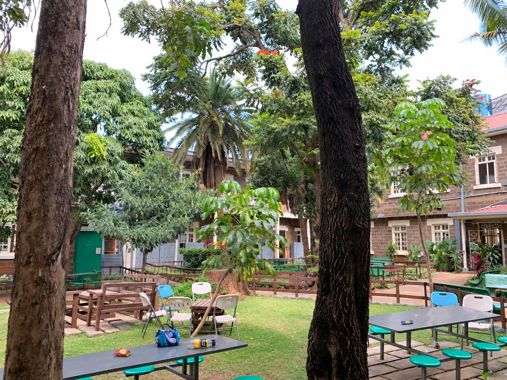

Plastic Waste
Snack wrappers, drink bottles and other packaging are opened at school every day. If they are not placed in a bin they become litter, and even in a bin they add to the amount of waste the school must remove.
Pollution can affect everyday places, including schools. By observing our surroundings and making responsible choices, students can help maintain a cleaner environment.

Snack wrappers, drink bottles and other packaging are opened at school every day. If they are not placed in a bin they become litter, and even in a bin they add to the amount of waste the school must remove.
Vehicles bringing students to and from school release exhaust gases. Using school transport or sharing a car means fewer vehicles and can help local air quality.
Turning taps off fully after use and reporting leaking taps to a member of staff are simple ways to reduce the amount of clean water that is wasted at school.
When waste is left on the ground or put in the wrong place, courts, gardens and seating areas become less clean and less pleasant for everyone who shares them.